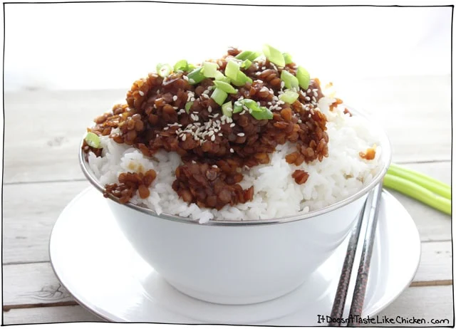

Sweet Korean Lentils

Description
All you need is 15 minutes, a few go-to ingredients, and boom, flavour-packed Sweet Korean Lentils are on the table. These lentils are sweet and mildly spiced, a serious nod to Korean BBQ.
Ingredients
For the sauce:
- 2 c water
- 1/4 c soy sauce
- 2-3 tbs brown sugar
- 2 cloves garlic, minced
- 1 inch piece of ginger, minced
- 1 tsp sesame oil
- 1/2 tsp crushed red chili flakes
For the lentils:
- 1 tbs oil
- 1/2 yellow onion, chopped
- 1 c red lentils
- 2 green onions, chopped
- 1 tbs sesame seeds
- cooked rice for serving
Steps
- In a medium bow, mix together all the sauce ingredients.
- Heat the oil in a skillet over medium heat, then add the onion and sauté for a few minutes until the onion softens and begins to brown.
- Now add the lentils and the sauce. Cover and bring to a gentle simmer until the lentils are cooked and tender, and most of the liquid is absorbed, about 8 to 10 minutes.
- Serve by spooning over rice, and garnishing with the green onions and sesame seeds.
Home